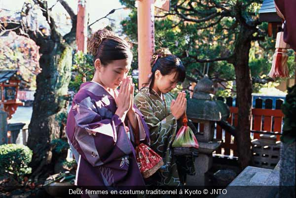

Entre art et savoir-faire, le Japon est un pays riche en matière culturelle. Cela reflète la tradition mais aussi le respect des valeurs dont le respect, la beauté, l’élégance et la sérénité. Allant de l’habillement jusqu’à l’art floral, en passant par l’art culinaire et bien d’autres encore, le pays du soleil levant fera la joie de tous les curieux désireux de découvrir toute une culture pratiquée par tout un peuple.
